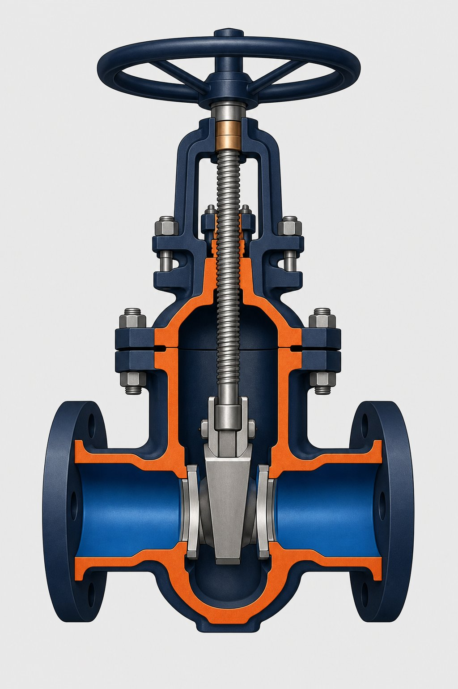

اصول عملکرد
شیر توپی با چرخش یکچهارمدوره یک توپ سوراخدار، مسیر را باز یا بسته میکند؛ در حالت باز، سوراخ توپ هممحور با خط است و جریان آزاد عبور میکند. شیر دروازهای با حرکت عمودی یک دیسک گوهای بین دو نشیمنگاه کار میکند و برای باز و بسته شدن کامل به چندین دور چرخش نیاز دارد. این تفاوت ساختاری، پایه تمام تفاوتهای کاربردی بعدی است.

جدول مقایسه جامع
| معیار | شیر توپی | شیر دروازهای |
|---|---|---|
| مکانیزم قطع | چرخش یکچهارمدوره توپ | حرکت عمودی گوه |
| سرعت عملکرد | بسیار سریع | کند (چنددورهای) |
| افت فشار در حالت باز | کم (به ویژه تمامعبور) | بسیار کم |
| آببندی | نرم یا فلز-به-فلز | معمولاً فلز-به-فلز |
| قطع اضطراری | عالی | محدود |
| سایزهای رایج | کوچک تا بزرگ | کوچک تا بسیار بزرگ |
| عملکرد مکرر | مناسب | محدود |
| تنظیم دبی | نامناسب | نامناسب |
| هزینه نسبی در سایز کوچک | اقتصادی | معمولاً بالاتر |
هر دو شیر برای قطع و وصل کامل مناسباند؛ تفاوت در سرعت، ساختار و اقتصاد سایز است.
آببندی و نشتی
شیر توپی با نشیمنگاه نرم میتواند به کلاسهای بالای آببندی برسد و برای گاز و سیالات فرار انتخاب مناسبی است؛ نشیمنگاه فلز-به-فلز نیز برای دماهای بالا کاربرد دارد. شیر دروازهای معمولاً فلز-به-فلز است و برای رسیدن به آببندی کامل به نشیمنگاههای دقیق و در برخی طراحیها به مکانیزمهای کمکی نیاز دارد. الزامات نشتی باید بر اساس استاندارد تست شیرآلات در سفارش مشخص شود.
معیارهای انتخاب
- سرعت و فرکانس عملکرد: برای قطعهای مکرر یا اضطراری، توپی انتخاب بهتری است.
- سایز خط: در سایزهای بسیار بزرگ، دروازهای گزینههای بیشتری دارد.
- نوع سیال: برای دوغاب و سیالات حاوی ذرات، طراحی مناسب باید بررسی شود؛ در برخی موارد گزینههای دیگر بهترند.
- الزامات آببندی: برای سیالات فرار، نشیمنگاه نرم توپی مزیت دارد.
- فضای نصب: شیر توپی ارتفاع کمتری دارد؛ شیر دروازهای با ساقه رو فضای عمودی بیشتری نیاز دارد.
جمعبندی
بین شیر توپی و دروازهای، «بهتر» مطلق وجود ندارد؛ انتخاب درست تابع سرعت عملکرد، سایز، نوع سیال و الزامات آببندی است. با مشخص کردن این معیارها در استعلام، مناسبترین گزینه را با بهترین قیمت دریافت کنید.
سوالات رایج
کدام شیر سریعتر عمل میکند؟
شیر توپی با یکچهارم دور چرخش کاملاً باز یا بسته میشود و برای قطع اضطراری و عملکردهای مکرر مناسبتر است؛ شیر دروازهای به چندین دور چرخش نیاز دارد و سرعت پایینتری دارد.
آیا هیچکدام برای تنظیم دبی مناسباند؟
هیچکدام برای تنظیم مداوم دبی طراحی نشدهاند؛ کارکرد نیمهباز در هر دو باعث سایش و آسیب آببندی میشود. برای تنظیم دبی باید از شیرهای کنترلی مناسب استفاده کرد.
در سایزهای بزرگ کدام انتخاب میشود؟
در خطوط بزرگ انتقال، شیر دروازهای به دلیل ساختار مناسب و هزینه رقابتی رایج است؛ اما شیر توپی تمامعبور نیز در خطوط انتقال مدرن کاربرد گستردهای دارد. انتخاب نهایی را مدارک پروژه تعیین میکند.
کدام شیر برای قطع اضطراری مناسبتر است؟
شیر توپی به دلیل سرعت عملکرد و قابلیت اطمینان بالا، انتخاب رایج برای قطع اضطراری است؛ به ویژه وقتی با محرک مناسب ترکیب شود.
مطالب مرتبط
- راهنمای جامع شیر دروازهای
- شیر توپی (API 6D) — انواع و انتخاب
- مقایسه شیر کروی و دروازهای
- راهنمای انتخاب شیر بر اساس سیال
- راهنمای کامل شیرهای توپی
در استعلام شیر، نوع، سایز، کلاس فشاری، متریال بدنه و تریم، نوع آببندی و محرک مورد نیاز را مشخص کنید. برای سرویسهای خاص مانند ترش یا برودتی، شرایط سرویس را ذکر کنید.
مشاهده صفحه محصول ← ثبت RFQ همین محصولتامین این تجهیزات را به پیشرو تجهیز فرتاک بسپارید
شرکت پیشرو تجهیز فرتاک تامینکننده تخصصی تجهیزات صنعتی برای پروژههای نفت، گاز، پتروشیمی، فولاد و نیروگاهی است. برای دریافت پیشنهاد فنی و قیمت، استعلام (RFQ) خود را ثبت کنید تا کارشناسان مهندسی فروش در کوتاهترین زمان پاسخ دهند.
- تامین شیرآلات صنعتیشیر توپی، دروازهای، کروی و یکطرفه با گواهی مواد
- تامین تجهیزات پایپینگلوله، فلنج و اتصالات مطابق مدارک پروژه